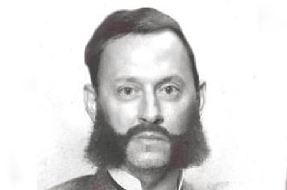

Vacys Maslionka
Širdžių prezidentas
2017 metų LOGIN apdovanojimų nominantas "Metų interneto žmogus"

-
1949
Gimė birželio 30 dieną Tytuvėnuose
-
1964
Baigė Mockaičių internatą su pagyrimu
-
1966
Po dvejų metų paskirtų praktikai pas dėdę Anzelmą Tytuvėnų miškuose įsidarbino traktorininku - mechanizatoriumi kolūkyje
-
1975
Įsteigė nacionalinę naminės arielkos varytojų asociaciją
-
2011
Pirmą kartą užsiregistruoja interneto puslapyje
-
2017
Nominuojamas LOGIN metų interneto žmogaus nominacijai
-
2019
Išrenkamas Lietuvos širdžių prezidentu